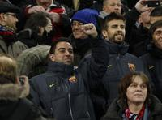
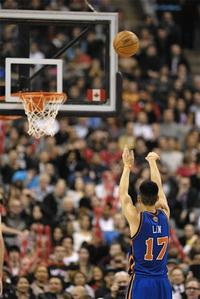
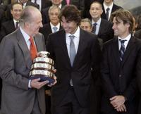
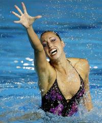
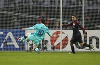
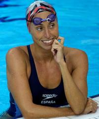
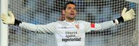
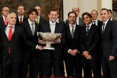

Un minero reanima a los artistas
Tue, 14 Feb 2012 23:11:00 +0100
Un joven minero chileno dispuesto a ser una celebridad reanimó al artístico Barça en Leverkusen. A veces, los mejores equipos, aquellos que se distinguen por su juego de salón, precisan de un futbolista diferente, capaz de cambiar dinámicas negativas. Nadie duda de la calidad del Barcelona. La mayoría de sus futbolistas son una celebridad. Ahora, sin embargo, andan preocupados desde que quedaran descolgados de la Liga. No es extraño por tanto que ayer jugaran con cautela y muy responsabilizados. Necesitan reencontrar al famoso Messi. Mientras, los partidos pasan y se requieren valientes como Alexis.
"Piqué sabe que le quiero mucho"
Wed, 15 Feb 2012 00:15:00 +0100
Siempre intervencionista, Pep Guardiola removió ayer otra vez la alineación del Barcelona y dejó a Xavi y Piqué en la grada frente al Bayer Leverkusen.

"Jugamos como en La Masia"
Tue, 14 Feb 2012 20:35:00 +0100
Para Mikel Arteta (San Sebastián, 1982) el balón siempre fue una prioridad, una pasión irrefrenable. Por eso, de niño, cuando jugaba partidillos en la playa de La Concha, se desfondaba de tal manera que, cuando llegaba a los entrenamientos del Antiguoko, acababa por vomitar del esfuerzo. De eso ha pasado mucho tiempo, tanto que sus pies se han hecho famosos en Francia, Escocia e Inglaterra, aunque en España no tiene ese reconocimiento. Pero ahora, bajo la batuta de Arsène Wenger, es el faro del Arsenal, equipo que discute hoy al Milan (20.45, televisiones autonómicas) y en San Siro, en la ida del duelo, una plaza para los cuartos de final de la Liga de Campeones.
Lin, un héroe sin límites
Wed, 15 Feb 2012 09:05:00 +0100
La epopeya de Jeremy Lin, el jugador de origen taiwanés al que hace apenas dos semanas nadie conocía, no parece tener límites. En Toronto decidió el partido con un último tiro, un triple, a nueve décimas para el final (87-90). No fue una acción aislada, sino la culminación de otra grandiosa actuación de este base que ha revolucionado a los Knicks, a Nueva York y a todos cuantos siguen la NBA.

"Nuestros deportistas nos han hecho ser un país más respetado"
Tue, 14 Feb 2012 20:59:00 +0100
"Nuestros deportistas nos han hecho ser un país más respetado", acabó diciendo Mariano Rajoy, el presidente del Gobierno, frente a la atenta mirada de Rafael Nadal, David Ferrer y el exseleccionador Albert Costa, representantes del equipo español campeón de la Copa Davis en 2011, a los que recibió ayer en el palacio de la Moncloa. Durante la recepción, en la sala de Los Tapices, resonaron los discursos y las citas de intelectuales: Blas de Otero, Madariaga, Unamuno... Sin embargo, dos palabras y una polémica sobrevolaron todos los parlamentos sin que nadie las pronunciara: el dopaje y las sospechas que hay en el extranjero sobre los éxitos del deporte español. A la misma hora y en un desayuno informativo, José Ignacio Wert, ministro de Educación, Cultura y Deportes, se pronunció de manera clara. "Tenemos un problema con el dopaje", dijo; "por eso vamos a intentar aprobar la unificación de la Ley Antidopaje para cumplir las exigencias del Código Mundial de la AMA porque es un aspecto de capital importancia para [la candidatura olímpica] Madrid 2020".

La crisis trunca el sueño olímpico de Roma
Tue, 14 Feb 2012 17:34:00 +0100
La economía de Italia no está para juegos, y mucho menos Olímpicos. El primer ministro Mario Monti ha cortado de un tajo las escasas posibilidades que tenía Roma de competir con otras cinco ciudades -entre ellas Madrid- por la organización de los Juegos Olímpicos de 2020. Ante la decepción del alcalde Gianni Alemanno, el jefe del Gobierno ha sido categórico: "El Comité Olímpico Internacional (COI) pide una carta a cada jefe de Gobierno en la que debe asumir un compromiso de garantía financiera, comprometerse a cubrir cualquier eventual déficit. Hemos reflexionado y hemos llegado por unanimidad a la conclusión de que no sería posible asumir ese compromiso". Por si a alguien le quedara aún alguna duda, Monti ha añadido una frase que es en sí un doble cerrojo a cualquier esperanza: "Italia está atravesando una grave crisis y no puede permitirse distracciones o riesgos económicos".
Gemma Mengual se retira
Tue, 14 Feb 2012 12:29:00 +0100
La nadadora Gemma Mengual, de 34 años, una de las deportistas españolas con mejor palmarés, anunciará mañana su retirada definitiva de la práctica de la natación sincronizada, especialidad en la que se había convertido en un referente mundial. Mengual ha convocado una rueda de prensa para mañana (12:30) en la que anunciará sus planes de futuro. Inicialmente su idea era retirarse tras los Juegos de Londres, en los que iba a competir en la modalidad de equipos, aunque finalmente ha decidido retirarse, según han explicado a EFE fuentes federativas.

"Muchos dirigentes son homófobos"
Mon, 13 Feb 2012 23:32:00 +0100
"¿Tiene usted el virus del sida? Esta fue la primera pregunta que me hicieron en la cadena de televisión norteamericana ESPN cuando anuncié mi condición de homosexual. ¡Buuufff! Empezar así no es fácil". John Amaechi (Boston, 1970) hizo pública su orientación sexual hace cinco años tras haber escrito un libro, El hombre en medio, con el que se convertía en el primer, y único hasta el momento, jugador de la NBA en hablar públicamente de su homosexualidad.
Messi: 30 remates para dos goles
Wed, 15 Feb 2012 01:01:00 +0100
Messi se dio ayer una buena paliza. Corrió lo suyo, participó mucho y remató: tres de sus disparos fueron a puerta, uno lo paró el portero y otro lo escupió un palo. Al final, tuvo premio. Le persigue el runrún de que no está fino. En la faceta goleadora, al menos, así parece: encara como siempre, pero no define como solía.

Un Lyon decadente perdona al Apoel
Tue, 14 Feb 2012 22:53:00 +0100
Fue en el descuento de la primera parte cuando el Apoel acabó de delatar sus intenciones, también sus limitaciones. Había conseguido, al fin, llegar a la línea de fondo del Olympique y forzar un saque de esquina que acabó en falta lateral a favor. No se botó porque el árbitro señaló el descanso. Los jugadores del Apoel se abalanzaron sobre él, indignados. Para ellos pasar del medio campo era un triunfo. Nada de lo que habían mostrado hasta entonces delataba su currículo de equipo invicto a domicilio en la fase de grupos. Solo había mostrado orden, esfuerzo, renuncias e incapacidades.
El mismo Clemente de siempre
Tue, 14 Feb 2012 20:51:00 +0100
En la larga trayectoria de Javier Clemente en los banquillos de medio mundo hay muchos antes y muchos después. Hay un antes de su debut como técnico del Athletic que se corresponde con la lesión que segó su vida como futbolista y hay un después por la forma más traumática con la que quizá un entrenador ha dejado un banquillo, con una crisis social descomunal. Nunca en Bilbao tanto éxito (dos Ligas, una Copa y una Supercopa) fue seguido de tanta polémica, repetida en el Espanyol, en el que el éxito del subcampeonato en la Copa de la UEFA resultó no menos discutido.
Adiós a la gran carismática
Tue, 14 Feb 2012 21:28:00 +0100
Se había quitado la gomina y soltado la melena de leona. El autobús la llevaba desde la piscina, en una isla del río San Lorenzo, al centro de Montreal. Iba cruzando el puente mientras respondía a las preguntas de un curioso que quería aprender sobre la competencia en el máximo nivel de la natación. El pardillo le preguntó si comer donuts era un lastre insoportable para un nadador. Ella, que acababa de cerrar los Mundiales de 2005 con una cosecha de cuatro medallas y estaba a punto de irse de vacaciones a Nueva York, hizo un ademán aristocrático y, un poco cansada de tanta cháchara, respondió:

El Sevilla reta a la FIFA a través de su camiseta
Tue, 14 Feb 2012 21:07:00 +0100
A pesar de que tanto la Federación Española de Fútbol como la FIFA prohíben cualquier clase de mensaje, lema o leyenda de carácter religioso, político o personal en las camisetas de los jugadores, el Sevilla entiende que la frase liberté, égalité..., superioridad! con la que el pasado lunes saltó el equipo al estadio de Anoeta no infringe norma alguna.

"Tévez, de vuelta en la perrera"
Wed, 15 Feb 2012 10:41:00 +0100
Contra su voluntad, Carlos Tévez ya está de vuelta en Manchester. "De vuelta en la perrera", precisa el diario The Times, que destaca el regreso del jugador argentino a la disciplina del City después de permanecer tres meses en su país, apartado del equipo por sus desplantes hacia el técnico Roberto Mancini. "Tévez ha vuelto. Aterrizó en el aeropuerto ayer por la tarde y acto seguido se dirigió a la ciudad deportiva de Carrington. El cielo pareció abrirse para El Apache, que ahora tiene el camino más despejado ya que Mancini ha moderado su posición. Si hace tres semanas parecía imposible que volviese a vestir la camiseta celeste, ahora emerge de nuevo esta posibilidad". Pese a todo, el diario recuerda que el artillero podría recibir una nueva sanción por parte de su club, de casi medio millón de euros, por haber declarado hace dos días que su entrenador le trataba "como a un perro".
Rajoy: "El mayor desprecio es no hacer aprecio"
Tue, 14 Feb 2012 11:18:00 +0100
"Nosotros somos el país que ha ganado más Roland Garros, aunque algunos no sean conscientes de ello. El mayor desprecio es no hacer aprecio", acaba diciendo Mariano Rajoy, el presidente del Gobierno, frente a la atenta mirada de Rafael Nadal, David Ferrer y el resto de componentes del equipo campeón de la Copa Davis 2011, a los que recibe esta mañana en el palacio de la Moncloa.
